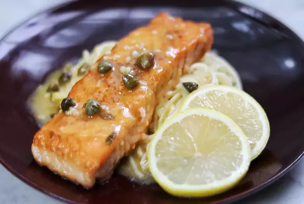

Quick Salmon Piccata

Description:
This is a quick, easy, and nutritious recipe.
Great for the entire family!
Caution: excessive amounts of fish consumption might
cause mercury poisoning.
Ingredients
- 4 (3 ounce) salmon fillets, skin removed
- salt and ground black pepper
- ¼ cup all-purpose flour
- 2 tablespoons vegetable oil
Steps
- Season salmon with pepper
- Heat oil in a skillet
- Pour wine into the skillet
- Cook for about four minutes. Turn once